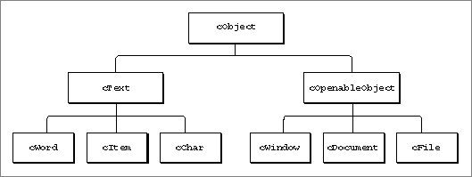
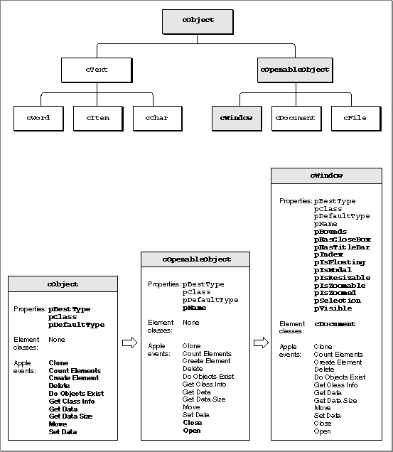
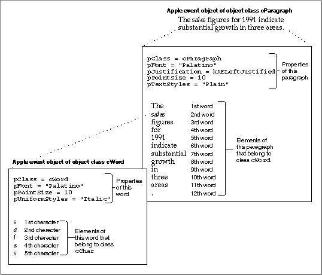

The Classification of Apple Event Objects
To create or resolve object specifier records, your application should use the classification of Apple event objects defined by the Apple Event Registry: Standard Suites. This section summarizes the concepts that underlie that classification system. You should have a copy of the Apple Event Registry: Standard Suites available for reference purposes while you read this section.You do not need to write your application in an object-oriented programming language in order to support Apple event objects in your application. However, you must understand the classification system described in this section in order to classify Apple event objects in your application and to write routines that can locate them on the basis of information contained in object specifier records.
Object Classes
Except for the concept of inheritance, Apple event objects are different from the objects used in object-oriented programming languages. Apple event objects are distinct items in a server application or any of its documents that can be specified by an object specifier record in an Apple event sent by a client application. Apple event objects are often, but not always, items that a user can differentiate and manipulate within an application, such as words, paragraphs, shapes, windows, or style formats. Every Apple event object can be classified according to its object class, which defines both its characteristics and its behavior. The object classes listed in the Apple Event Registry: Standard Suites provide a method of describing Apple event objects that all applications can understand. Object classes permit more flexibility than simple descriptor types; for example, a word can be defined as a simple string, or it can be defined as an Apple event object with specific characteristics such as font or style.Each object class is identified by a four-character object class ID, which can also be represented by a constant. Constants for object classes always begin with the letter
- Note
- The definition of an object class only specifies conventions that determine how applications should handle Apple event objects that belong to that class. Your application must make sure that it uses the conventions correctly; they are not enforced by the Apple Event Manager.
c.The definition of an object class specifies its superclass, which is the object class from which a subclass (the class being defined) inherits some of its characteristics. Characteristics can also be inherited from special object classes, called abstract superclasses, that are used only in definitions of object classes and do not refer to real Apple event objects. The pattern of inheritance among object classes is called the object class inheritance hierarchy. Figure 3-15 shows a portion of this hierarchy. The abstract superclass
cObjectis at the top of the hierarchy and is therefore the only object class that has no superclass. At the next level arecText, which is a regular object class, andcOpenableObject, which is an abstract superclass. Both are subclasses ofcObjectand superclasses for their own subclasses. The object classescWord,cItem, andcCharare all subclasses ofcText. Similarly,cWindow,cDocument, andcFileare subclasses ofcOpenableObject. Every object class inherits all the characteristics of its superclass and can also add characteristics of its own.Figure 3-15 Superclasses and subclasses

Here are some of the object classes defined for the Core suite:
Class Class ID Description cChar 'cha ' Text characters cDocument 'docu' Macintosh documents cFile 'cfil' Macintosh files cSelection 'csel' User or application selections cText 'ctxt' Series of characters cWindow 'cwin' Standard Macintosh windows Here are some of the object classes defined for the Text suite:
Class Class ID Description cChar 'cha ' Text characters cLine 'clin' Lines of text cParagraph 'cpar' Paragraphs cText 'ctxt' Series of characters cTextFlow 'cflo' Text flows cWord 'cwor' Words As you can see, some object classes, such as
cCharandcText, are defined in more than one suite. For example, the definition of thecTextobject class in the Text suite is an extension of thecTextobject class defined in the Core suite; it duplicates all the characteristics of the Core suite object class and adds some of its own. Like a word in a dictionary, one object class ID can have several related definitions. You can choose to support the definition that best suits your application; or, if necessary, you can create extensions of your own. The extension of an object class is different from inheritance between object classes. An extension of a standard object class provides additional ways of describing an Apple event object of that class, whereas the object class inheritance hierarchy determines the pattern of characteristics shared by different object classes.The definition of an object class always specifies a default descriptor type. Suppose, for example, that a client application sends a Get Data, Cut, or Copy event that specifies an Apple event object but does not specify a descriptor type for the returned data. In this case, the server application returns a descriptor record of the default descriptor type for the object class of the specified Apple event object. For example, the default descriptor type for Apple event objects of class
cWordistypeIntlText, a descriptor type that specifies an undelimited string of characters in a specific language and script system. The client application can also request that the data be returned in a descriptor record of some other data type.The definition of an object class includes three lists of characteristics: properties, element classes, and Apple events that support the object class. (The next section describes properties and element classes.) Any or all of these characteristics may be inherited from a superclass. An Apple event is listed for an object class if its parameters can specify objects of that class. The definition for
cWindow, for example, lists 12 Apple events, including the Open, Close, and Move events, whose parameters can include object specifier records that specify windows. ThecWindowclass inherits all of these Apple events from its abstract superclass,cOpenableObject.The Apple Event Registry: Standard Suites also defines primitive object classes, which describe Apple event objects that contain a single value. For example, the
cBoolean,cLongInteger, andcAliasobject classes are all primitive object classes. The object class ID for a primitive object class is the same as the four-character value of its descriptor type. Primitive object classes contain no properties; they contain only the value of the data.Properties and Elements
The properties listed for an object class can be used to identify characteristics of Apple event objects that belong to that class. Each property is identified by a four-character property ID, which can also be represented by a constant. Constants for properties always begin with the letterp.Here are constants and property IDs for some properties:
Property Property ID Description pName 'pnam' Name of an Apple event object pBounds 'pbnd' Coordinates of a window pVisible 'pvis' Indicates whether a window is visible pIsModal 'pmod' Indicates whether a window is modal pClass 'pcls' Class ID of an Apple event object pFont 'font' Font pTextStyle 'txst' Text style pColor 'colr' Text color pTextPointSize 'ptps' Point size pScriptTag 'psct' Script system identifier pFillColor 'flcl' Fill color The property of an Apple event object is itself defined as a single Apple event object whose container is the object to which the property belongs. For example, the
pFontproperty of a word is defined by the name of a font, such as New York; the string that identifies the font is an Apple event object of classcText.The constant
cPropertyspecifies the object class for any object specifier record that identifies a property.CONST cProperty = 'prop';An object specifier record for a property specifiescPropertyas the object class ID, the Apple event object to which the property belongs as the container,formPropertyIDas the key form, and a constant such aspFontas the key data.The elements of a specific Apple event object are the other Apple event objects it contains, excluding those that define its properties. An object specifier record for an element specifies the Apple event object in which the element is located as the container and can specify any key form except
formPropertyID. Each object class definition in the Apple Event Registry: Standard Suites includes a list of element classes, which are the object classes of the elements that an Apple event object can contain.An Apple event object contains exactly one of each of its properties, whereas it can contain no elements or many elements of the same element class. In general, a property of an object describes something about that object; a property can be examined or changed but never deleted. An element can be one or more discrete objects contained in another object and can usually be deleted.
For example, because a paragraph can contain one or more words, one of the element classes listed for the object class
cParagraphis the object classcWord. Individual words can be deleted from a paragraph. However, even though a word in a paragraph can be in a different font from the words around it, a paragraph can have only onepFontproperty. This property is defined as the font of the first character in the paragraph and consists of the name of a font. The paragraph'spFontproperty can be changed but not removed.The properties and element classes listed for each object class definition in the Apple Event Registry: Standard Suites can be inherited from a superclass, or they can originate with a subclass. Figure 3-16 illustrates the object class inheritance hierarchy for the object class
cWindowin the Core suite. Boldface terms in the figure represent those properties, element classes, or Apple events that are not inherited. The object classcWindowincludes all the properties and Apple events of its superclass,cOpenableObject, which in turn includes all the properties and Apple events of its superclass,cObject. The object classcWindowalso includes 11 properties and one element class that originate withcWindowand are not inherited.The
pClassproperty--the property that specifies the four-character class ID--originates withcObject. Because the definitions of all object classes are ultimately derived fromcObject,pClassis inherited by all object classes. The definition forcObjectalso lists ten Apple events, which include common events such as Get Data, Move, and Delete Element. BecausecObjectis at the top of the object class inheritance hierarchy, these ten Apple events can use object specifier records that describe Apple event objects of any object class as a direct parameter. Like all abstract superclasses,cObjectdoes not correspond to a real Apple event object, so its definition does not list any element classes. Unlike any other object class,cObjectis at the top of the object class inheritance hierarchy and therefore does not have a superclass.Figure 3-16 The object class inheritance hierarchy for the object class
cWindow
The chain of containers that determine the location of one or more Apple event objects is called the container hierarchy. The container hierarchy, which specifies the location of real Apple event objects, is different from the object class inheritance hierarchy, which is an abstract concept that determines which properties, element classes, and Apple events an object class inherits from its superclass. For example, the container hierarchy for an Apple event object of class
cWordcan vary from one word to another, because various combinations of other Apple event objects, such as a document, a paragraph, a delimited string, or another word, can contain a word.Applications that support Apple event objects must be able to identify the order of several elements of the same class that are contained within another Apple event object. For example, each word in a paragraph should have an identifiable order, such as the 5th word or the 12th word. This allows other applications to identify Apple event objects by describing their absolute position within a container.
Figure 3-17 shows an Apple event object of object class
cWord--the word "Sales"--contained in another Apple event object of object classcParagraph. (Both these object classes are defined in the Text suite.) The figure shows only a portion of the container hierarchy for the word, since a complete description of the word would also include the containers that specify the location of the paragraph.Your application must take account of the definitions in the Apple Event Registry: Standard Suites for any object classes you want to support. For example, the definition for the object class
cTextlists paragraphs, lines, words, and characters as Apple event objects that can be contained in Apple event objects of classcText. To support Apple events that refer to elements of object classcText, your application should associate thecTextobject class with paragraphs, lines, words, and characters in its documents. The list of properties defined for classcTextincludes the propertiespColor,pFont,pPointSize,pScriptTag, andpTextStyles. If you want to support Apple events that distinguish a boldface 12-point word of object classcTextfrom an italic 14-point word, for example, your application must associate the point size and style of text in its documents with the propertiespPointSizeandpTextStylesdefined for classcText.Figure 3-17 An Apple event object of class
cWordcontained in an Apple event object of classcParagraph